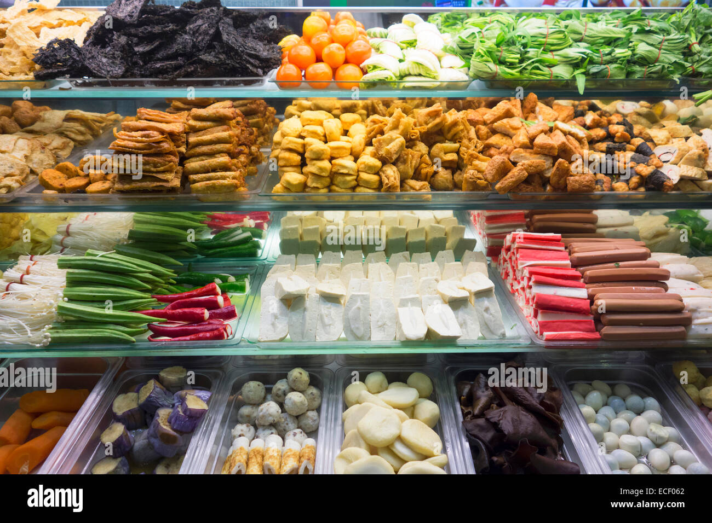

Tofu, vegetables, fishballs, and stuffed selections are prepared for daily lunch service.
Our story
Comfort food for busy NYP days.
Our stall is located at NYP South Canteen, closest to the Engineering and Applied Sciences blocks. Students come by for quick, flexible meals built from fresh ingredients and familiar flavours.
From clear soup to laksa and tom yum, each bowl is designed to be simple, warming, and easy to customize.

Choose your base, add preferences, and keep lunch light or filling depending on your day.
Visit NYP South Canteen for dine-in, takeaway, and quick collection.